Spring 2026 | Illustrator, Designer | Procreate, Indesign

The Cowherd and the Weaver Girl
Adapting the ancient Chinese legend, the Cowherd and the Weaver Girl, this book was made in collaboration
with DERT. DERT is a social enterprise that activates books into
fundraising tools that raise money for literacy programs.
This is an illustrated storybook, which tells the story of the Cowherd and the Weaver Girl, or 牛郎织女。
The books features text in two languages, Mandarin Chinese and English. The Mandarin text was written by my mother,
which was then translated into English by me. All the illustrations were done by me as well.
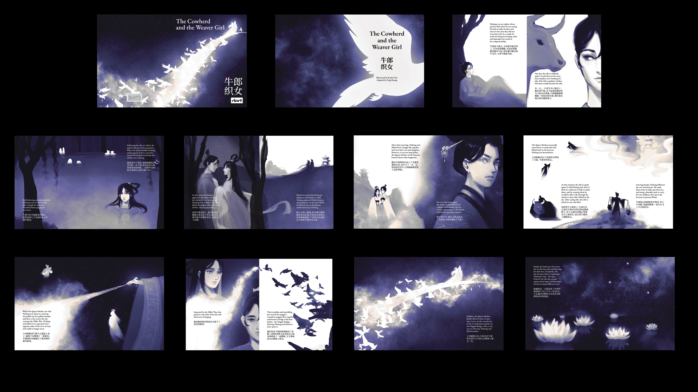
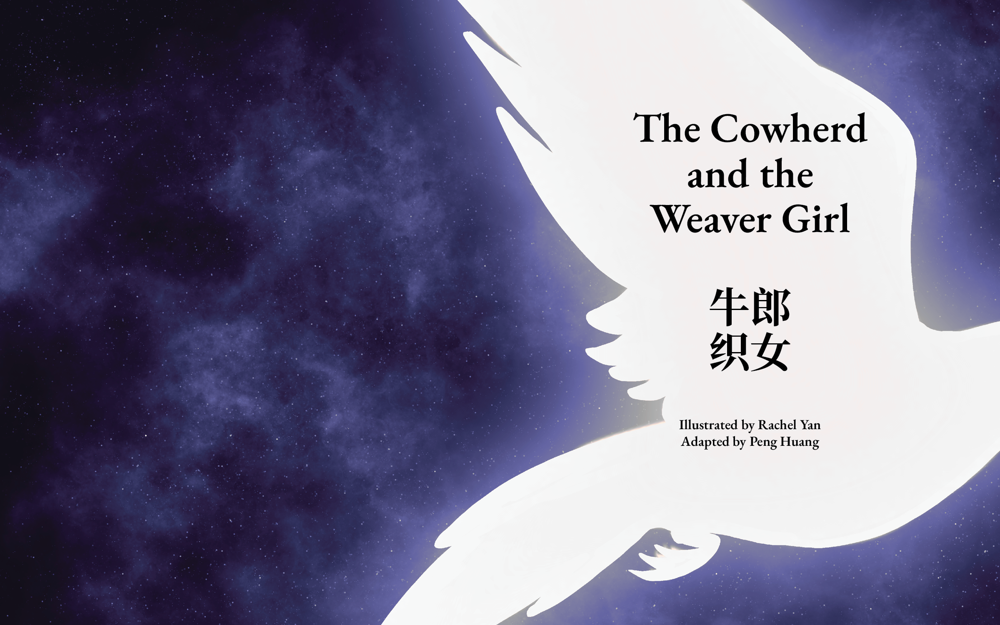
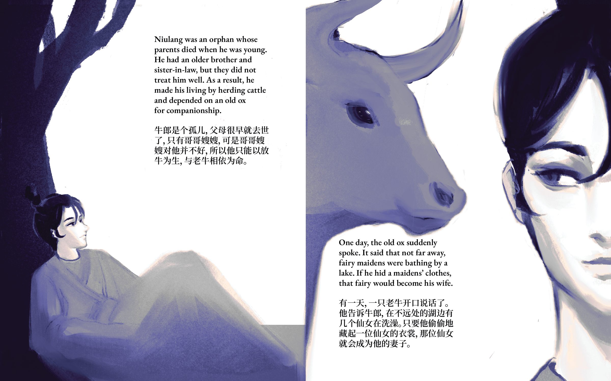
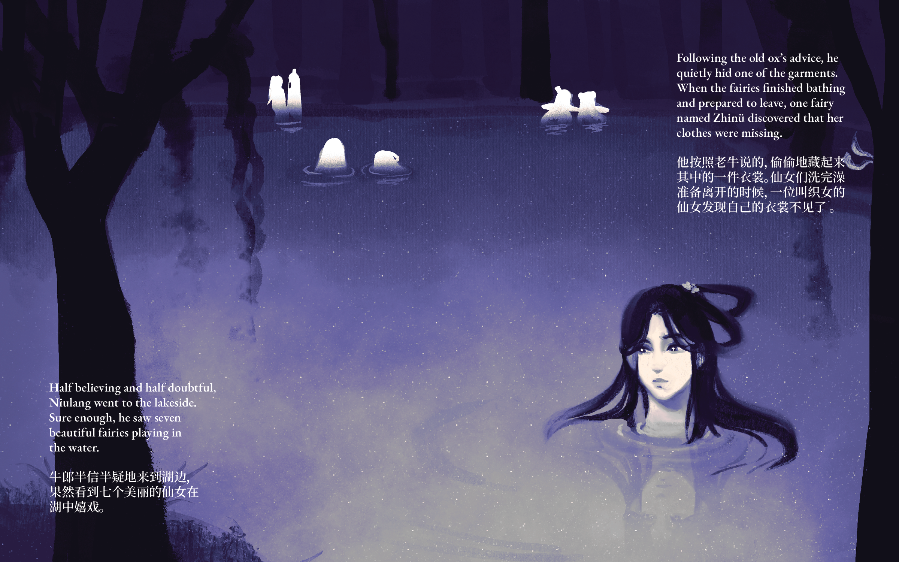
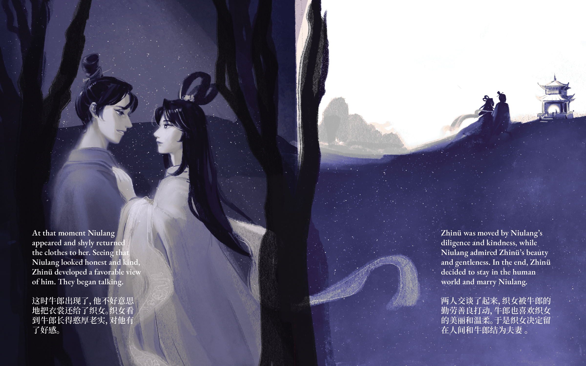
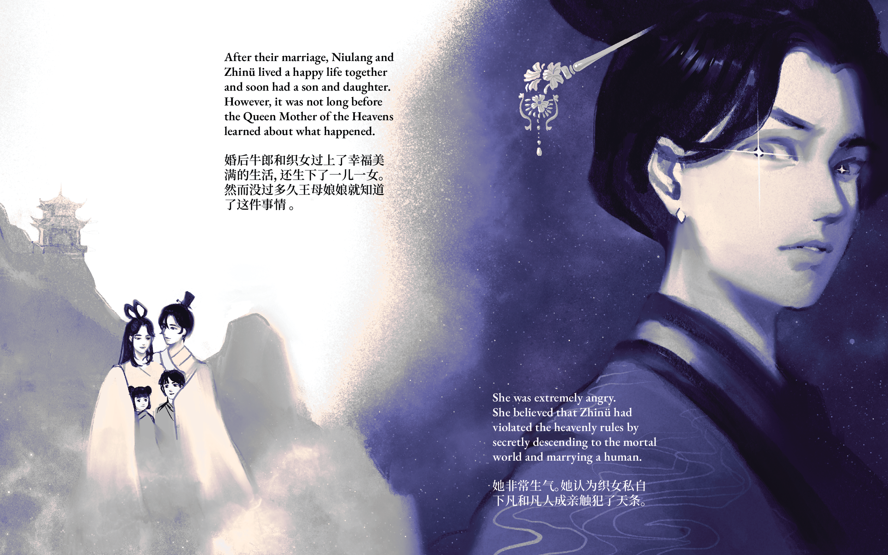
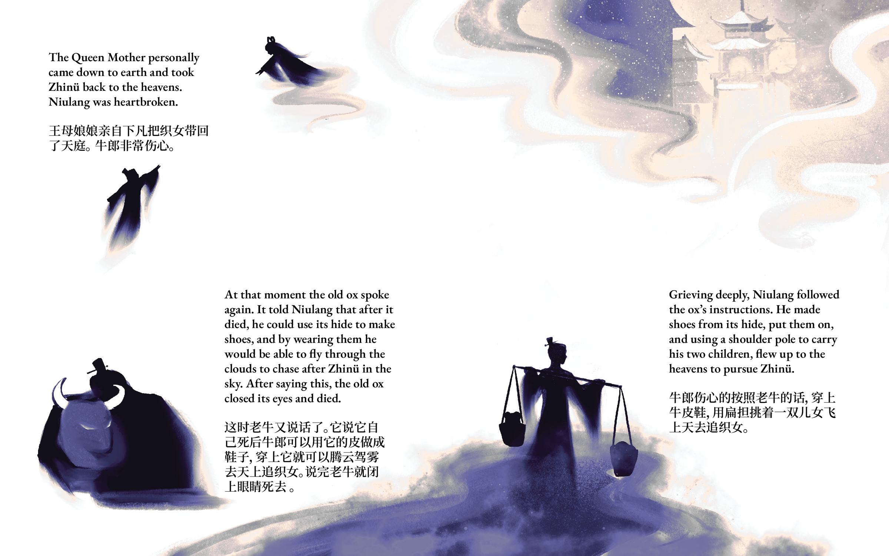
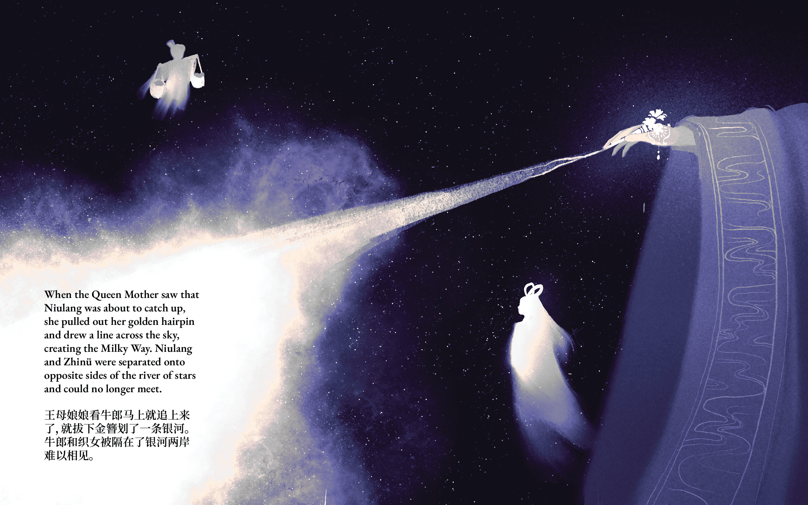
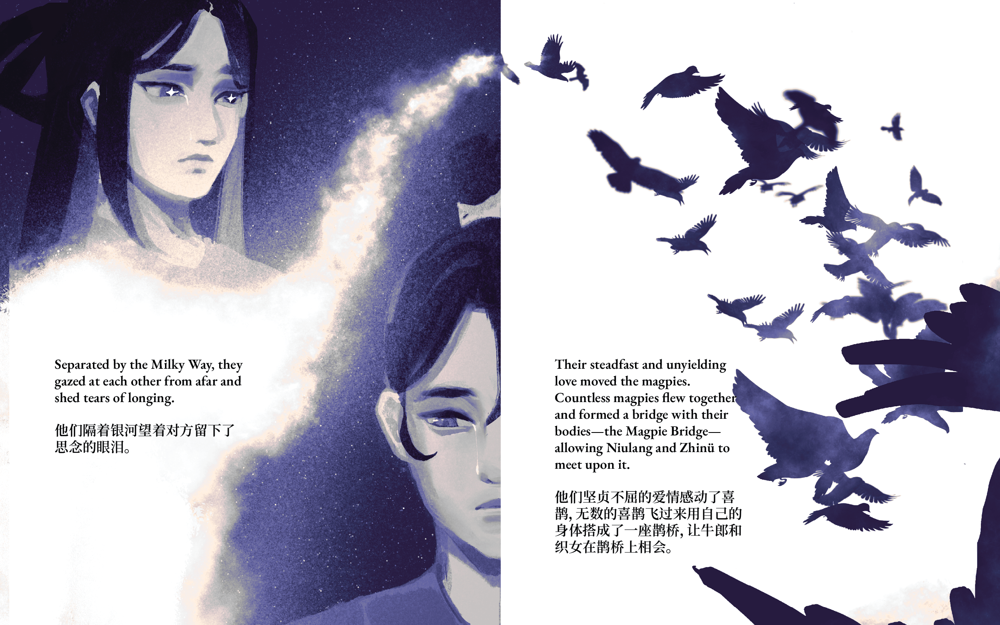
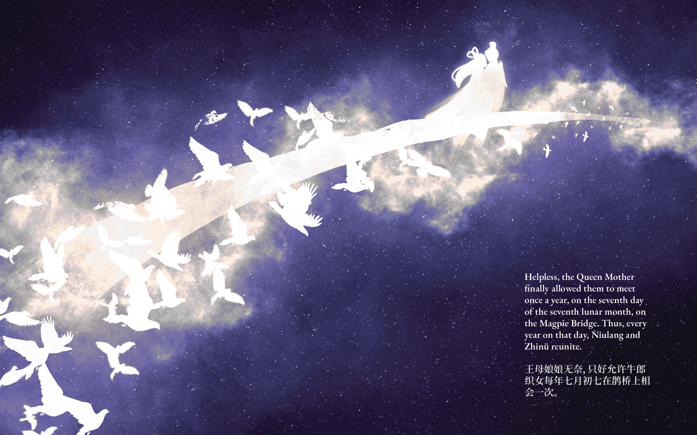
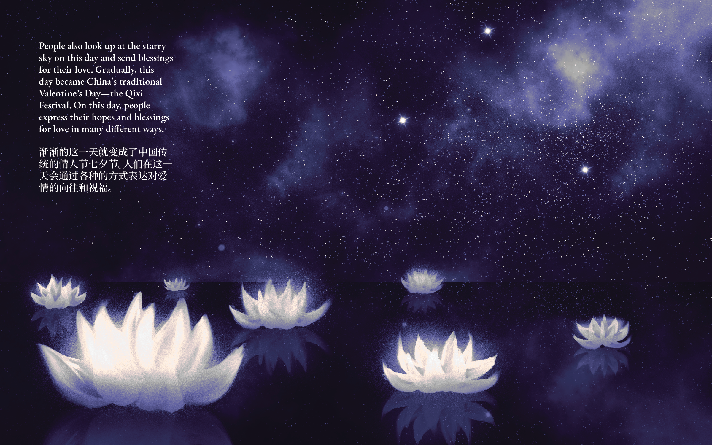